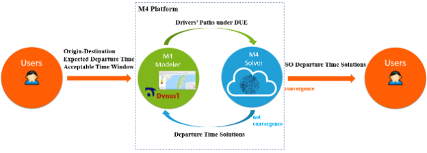
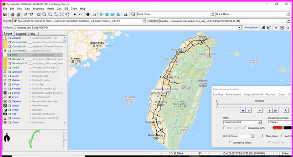
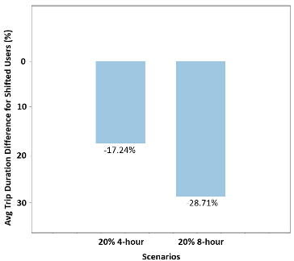
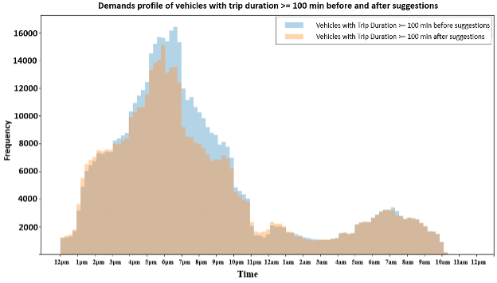

Travel Demand Management Strategies Development
Over the last few decades, massive demand surges due to long-weekend holidays have clogged the entire highway system in Taiwan. A platform for cooperative demand management (CDM) strategies was developed to better cope with this chronic issue and leapfrog the traditional forecast-react ITS management paradigm.

The platform is fed with the users’ origin-destination pairs, previously planned departure times, and acceptable departure time windows (if provided). When convergence is achieved through iterative implementations Modeler and Solver, the platform gets back to users, with the departure time suggestions to help the system achieve its optimal condition.
The modeler is essentially a large-scale mesoscopic simulation model capable of reporting performance outcomes under Dynamic User Equilibrium (DUE). This module reads the road network and a set of time-varying demands for the system, then generates the paths for every driver under DUE. It was developed using DynuStudio

The solver utilizes paths obtained from the modeler, users’ acceptable departure time windows, and the static traffic flow models as the constraints, then solves an optimization problem with the objective of system congestion level minimization.

The figure above illustrates that, in the scenario with 20% participation and a 4-hour time window, the users can save 17% of the total travel time on average and 29% in the 20% participation and 8-hour time window one. To have a sense of the total travel time saving, we computed that for the 20% 8-hour scenario, the total travel time saving would be above 72,000 minutes (1,200 hours) which is rather significant.

We can also find that, before the optimization, the total number of trips with travel time greater than 100 minutes is considerably larger than that after the optimization. This can be visualized by checking the total area of two curves. This means that the optimization reduced the vehicle travel time, and many vehicles move from this group to the travel time less than 100-minutes group.
This is one of the first studies to model the CDM strategy on large-scale highway systems with personalized departure time solutions. The proposed framework indicates a viable way to incorporate simulation results into management strategies designed to ensure real-world effectiveness. This study provides a promising conclusion that the CDM strategy is worth consideration for future large-scale highway travel management during long holiday events.